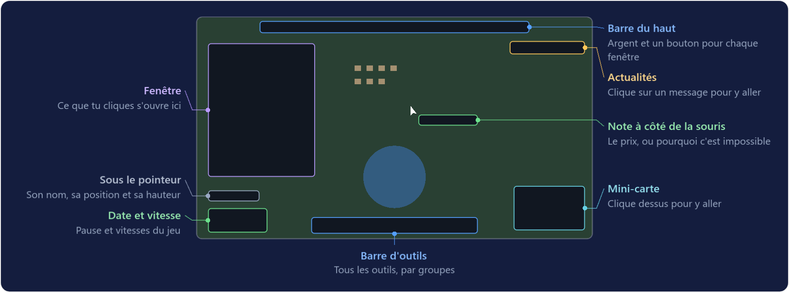

L'écran
Les barres, les fenêtres et la note à côté de la souris.
Tout est accessible depuis trois endroits : la barre du haut, la barre d'outils en bas et la note qui suit la souris.


| Où | À quoi ça sert |
|---|---|
| Barre du haut | Ta trésorerie (clique dessus pour Finances) et un bouton pour chaque fenêtre. |
| Date et vitesse | La date, en bas à gauche, avec la pause et les vitesses du jeu. |
| Barre d'outils | Inspecter, Routes, Rail, Ports, Terrain, Démolir, Annuler et Véhicule. Choisir un groupe ouvre une rangée de ses outils au-dessus de la barre. |
| Mini-carte | Le monde entier dans un coin. Clique dessus pour t'y rendre. |
| Actualités | Les messages sur ton entreprise apparaissent au fil des événements. Clique sur l'un d'eux pour aller à l'endroit concerné ; les nouvelles d'objectifs, de subventions et de demandes ouvrent les Objectifs. La fenêtre Actualités les garde, et Toutes les actualités montre aussi ce que font les rivaux et les autres villes. |
La note à côté de la souris
- Avant de construire, elle montre le prix d'une case de route, de voie, de caténaire ou de pont.
- Pendant que tu glisses, elle montre le prix total et ce que tu construis, en vert.
- Quand quelque chose ne peut pas être construit, elle passe au rouge et dit pourquoi : un bâtiment qui gêne, un terrain trop pentu, pas assez d'argent ou un conseil municipal qui refuse.
Observer
- Avec Inspecter (1), clique sur un véhicule, une station, une industrie ou un bâtiment pour ouvrir sa fenêtre. Pointe n'importe quoi pour savoir ce que c'est.
- Avec Inspecter, laisse le pointeur un instant sur une station, le nom d'une ville, une industrie, un véhicule ou un bâtiment et une fiche à côté donne les chiffres clés : la cargaison en attente et les notes, la population et l'avis du conseil sur toi, ce qu'une industrie a produit et combien a été transporté, le chargement et le bénéfice d'un véhicule. Les Paramètres permettent de désactiver les fiches.
- Avec un outil de construction en main, le coin en bas à gauche nomme ce qui est sous le pointeur, avec ses coordonnées et sa hauteur.
- Cette fenêtre se place à gauche. Cliquer sur autre chose la remplace, et une flèche de retour dans sa barre de titre ramène à ce que tu regardais.
- Les écrans comme Véhicules, Finances ou ce guide s'ouvrent un par un : un nouveau remplace le précédent, et appuyer à nouveau sur la touche ou le bouton d'un écran le ferme.
- Appuie sur l'épingle d'une fenêtre pour la garder ouverte quoi que tu ouvres d'autre. Paramètres propose une option pour que toutes les fenêtres restent ouvertes.
- Les villes et les industries portent de petites icônes de cargaison : vides pour ce dont elles ont besoin, pleines pour ce qu'elles produisent.
- Déplace une fenêtre par sa barre de titre. Esc ferme celle du dessus.
Listes de ce que tu possèdes
- Véhicules (V) liste ta flotte avec le bénéfice de chaque véhicule. Trie-la par À surveiller pour voir d'abord ceux qui ont des ennuis.
- Stations (Ctrl+S) liste toutes les stations avec ce qui y attend et leurs notes.
- Lignes (Ctrl+L) liste tes lignes avec leurs arrêts, leurs véhicules et leur bénéfice. Voir Lignes.
- Problèmes (I, le panneau d'avertissement, avec un nombre) liste tout ce qui est bloqué ou va mal, chaque fois avec la raison et un bouton qui y remédie ou t'y emmène.
- Dans ces listes, clique sur une ligne pour l'ouvrir, ou sur son bouton cible pour la voir sur la carte. Dans Problèmes, un clic sur une ligne montre l'endroit et le bouton à côté règle le problème.
- Objectifs (J, le drapeau) réunit tes premiers pas, tes succès, où en est l'objectif de ton entreprise et les subventions et demandes des villes proposées. Voir Objectifs et succès.
Sauvegarder
- F5 sauvegarde immédiatement et F9 recharge cette sauvegarde.
- Le menu du jeu (Esc) sauvegarde sous le nom de ton choix et charge n'importe quelle partie sauvegardée.
- Le jeu sauvegarde aussi tout seul, tous les trois mois sauf si tu changes cela dans Paramètres.
Tous les raccourcis sont dans Commandes.